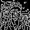
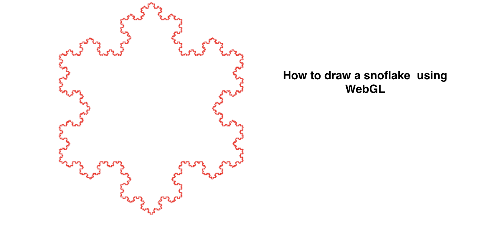
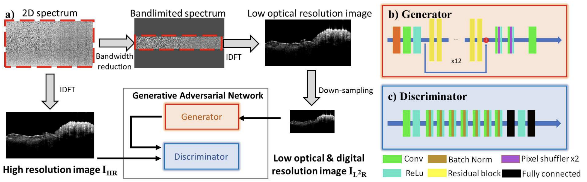

,
My background is Computer Science, Electrical Computer Enginering with a minor in Advertising. The similarity among them is that they all require creativity!
Generating a snowflake s a process that starts from simplicity and progresses toward complexity, just like creative activities ᕦʕ •ᴥ•ʔᕤ !

I am a creator of
Algorithms:
– Researching in Image Processing, Generative AI, XR and Machine Learning
(Video shows: NeRF contructed lego in HoloLesn 2 device)
 (Image shows: Super resolution Neural Networks to increase optical and digital resolution)
Game
– A Unreal zombie shooting game

– A Unity mini game that spoof the streamer (hold space to blow the feather away). This game is to spoof the popular streamer in Chinese social media.

Music
– Phonk + Kawii + Rap
Vlog
– Trip to Florida
Biography
Google Schoolar| Resume | Linkedin| Github |YouTube |Bilibili
Education
The University of Alabama, Tuscaloosa, AL. Aug. 2019 – Nov. 2024 (expected)
Ph.D. in Electrical Computer Engineering (ECE), GPA: 3.86/4.0
Research focus: Image Processing, Generative AI (image, graph), XR, Machine Learning
The University of Alabama, Tuscaloosa, AL Jan. 2016 - May 2019
B.S. in Computer Science (CS), GPA: 3.71/ 4.0
Minor: Advertising
Experience
The University of Alabama, Tuscaloosa, AL May 2019 – Present
Research Assistant
360-degree View Generation of Humans from a Monocular Video
• Designed a deep learning algorithm to extract a 3D human model based on a single image and generate a 360-degree view (displayed in Hololens 2) of the human while doing rehabilitation.
Intelligent Treadmill Project (Patented)
• Designed a self-supervised intra-gait classification neural network to predict the current walking gait phases that achieves 98% progression accuracy on 34 testing subjects
• Deployed the server-client control between AI model and treadmill (Bertec and KineAssist) that makes the single-belt treadmill (~$1k) achieve comparable functionality as the split-belt treadmill (~$400k) for post-stroke patient rehabilitation
2D-3D Building Energy Anomaly Registration
• Detected and reconstructed building energy leaking anomaly from thermal image and register the anomaly to 3D mesh and rendering with Neural Randiance Field technique Human Gaze Prediction
• Developed an Inverse Reinforcement Learning model to predict the human gaze scanpath on math problems based on the problem image and brain EEG signal
Biomedical Image Processing Projects
• Developed software to auto-detect the saturation artifacts according to spectrum information of (Optical Coherence Tomography) OCT images
• Developed a Super Resolution Generative Adversarial Network (SR-GAN) to increase both optical and digital resolution of human coronary OCT images
Body Information Retrieve Project
• Developed an Android app to measure the height, waistline, and hipline of humans by taking a picture of them
Mercedes-Benz U.S. International, Vance, AL Jan. 2019 – May 2019
Capstone Computing
Method Time Measurement (MTM) for well-trained assembly line workers
• Built an desktop application with Unity3D and RGBD camera to capture and auto-divide the assembly process into basic operations (MTM code) defined by Mercedes-Benz manufacture standard.
Gongbing Technology, Shenzhen, China May 2018-August 2018
Software Development Intern
Add-on features for an eyeglasses management and inventory system on iPad
• Extracted the landmark of the human face and superimposed a virtual eyeglass to the front for the previous purpose
• Added the speech recognition feature to the top search bar
Teaching / Leadership
President of Association of Chinese Students and Scholars, The Source Page
Instructor for ECE 409/ECE509: Communication Labs, ECE 380: Digital Logic
Project manager for ECE492/494 Capstone Design I/II, Data Science Summer Bootcamp
Tutor for CS100/CS101: Programming for first-year college students (C/C++); CS201: Data Structures and Algorithm
Patents
- Simulating a Split-Belt with a Single-Belt Treadmill (No.: US 2022/0111249 A1)
- Real-Time, Fine-Resolution Human Intra-Gait Pattern Recognition Based on Deep Learning Models (US Patent App. 17/749,754, 2023)
Publication
-
S Cao, J Zhao, F Hu, Y Gan, “Metaverse-Oriented Telerehabilitation with Single-Camera-based, Avatar-Free Rendering,” IEEE Transactions on Visualization and Computer Graphics (In proceeding)
-
S Cao, M Ko, C Li, D Brown, X Wang, F Hu, Y Gan, “Single-Belt vs. Split-Belt: Intelligent Treadmill Control via Micro-Phase Gait Capture for Post-stroke Rehabilitation,” IEEE Transactions on Human Machine System (In proceeding)
-
X Li, S Cao, H Liu, X Yao, BC Brott, SH Litovsky, X Song, Y Ling, Y Gan, “Multi-scale reconstruction of undersampled spectral-spatial OCT data for coronary imaging using deep learning”. IEEE Transactions on Biomedical Engineering
-
H Liu, S Cao, Y Ling, Y Gan, “Inpainting for saturation artifacts in optical coherence tomography using dictionary-based sparse representation”. IEEE photonics journal 13 (2)
-
S. Cao, X. Yao, N. Koirala, B. Brott, S. Litovsky, Y. Ling, Y. Gan, “Super-resolution technology to simultaneously improve optical & digital resolution of optical coherence tomography via deep learning”. in 2020 42nd Annual International Conference of the IEEE Engineering in Medicine and Biology Society (EMBC)
-
H. Liu, S. Cao, Y. Ling, and Y. Gan, “Inpainting for saturation artifacts in optical coherence tomography using dictionary-based sparse representation”, IEEE Photonics Journal, vol. 13, no. 2, pp. 1–10 code
-
X. Chen, A. Miller, S. Cao, Y. Gan, J. Zhang, Q. He, R. Wang, X. Yong, P. Qin, B. Lapizco-Encinas, K. Du. Rapid Escherichia coli (E. coli) Trapping and Retrieval from Bodily Fluids via a Three-Dimensional (3D) Beads Stacked Nano-Device. ACS Applied Materials & Interfaces. 2020 Jan 15 (Featured complementary cover).